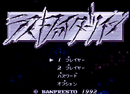
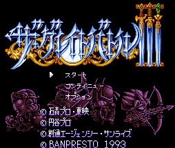
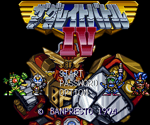
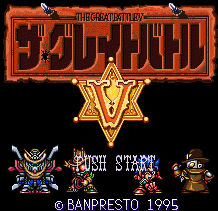
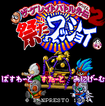

SD Great Battle - SNES Games
![[SD Great Battle]](images/great_battle.gif)
Controls
- A button: Jump
- B button: Shoot
- X button: Fire Special Weapon
- Y button: Option (?)
- L button: Change Option (?)
- R button: Change Characters
- Start: Pause
- Select: [not used]
You control Ultraman, a Gundam, and Kamen Rider as they run around shooting various bad guys from their shows.
No other information available at this time.

Controls
- A button: Punch
- B button: Kick
- X button: [not used]
- Y button: Jump
- L button: [not used]
- R button: [not used]
- Start: Pause
- Select: Change Characters
This game features Gundam F-91, Ultraman (G?), Kamen Rider, and Roa. Punch and kick your way
through the enemies to beat the level. If you hold down A button long enough, your character will toss a
very destructive fireball.

Controls
- A button: [not used?]
- B button: Jump
- X button: Block
- Y button: Attack
- L button: [not used]
- R button: [not used]
- Start: Pause
- Select: Change Characters
This game features Gundam F-91, Ultraman (G?), and, Kamen Rider. You are in a medevil
setting fighting bad guys with spears, swords, and clubs.

Controls
- A button: Change Character
- B button: Jump
- X button: Select Character
- Y button: Shoot
- L button: Use Sword
- R button: Shield?
- Start: Pause
- Select: Super Blast
This game features Ultraman Powered, Kamen Rider Zo, Roa, and V2 Gundam. There is also a two player mode that
allows you to piggyback your characters. This allows you to move freely while able to shoot in any direction.

This time, the great battle takes place in the Wild West as Ultraman, Kamen Rider Zo, Roa, and Gundam strap on
their galactic versions of spurs and six shooters. The game plays a bit like Area 51 without the moving around
so much. Essentially, your character runs back and forth on the bottom of the screen while the enemies run about in
the top of the screen. No other information available at this time.

Controls
- A button: [not used?]
- B button: Jump
- X button: Talk
- Y button: Punch
- L button: [not used?]
- R button: [not used?]
- Start: Pause
- Select: [not used?]
This game features Ultraman, Kamen Rider Zo, Roa, and a Gundam. No other information available at this time.
Anime Video Game Resource Center © 1998 by Luis A. Cruz